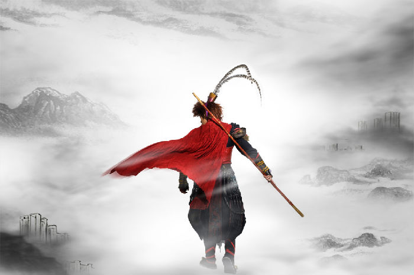

就在这当儿，跑来了一只狐狸。
“你好。”狐狸说。
“你好。”小王子很有礼貌地回答道。他转过身来，但什么也没有看到。
“我在这儿，在苹果树下。”那声音说。
“你是谁？”小王子说，“你很漂亮。”
“我是一只狐狸。”狐狸说。
“来和我一起玩吧，”小王子建议道，“我很苦恼……”
“我不能和你一起玩，”狐狸说，“我还没有被驯服呢。”
“啊！真对不起。”小王子说。
思索了一会儿，他又说道：
“什么叫‘驯服’呀？”
“你不是此地人。”狐狸说，“你来寻找什么？”
“我来找人。”小王子说，“什么叫‘驯服’呢？”
“人，”狐狸说，“他们有枪，他们还打猎，这真碍事！他们唯一的可取之 处就是他们也养鸡，你是来寻找鸡的吗？”
“不，”小王子说，“我是来找朋友的。什么叫‘驯服’呢？”
“这是已经早就被人遗忘了的事情，”狐狸说，“它的意思就是‘建立联系’。”
“建立联系？”
“一点不错，”狐狸说。“对我来说，你还只是一个小男孩，就像其他千万 个小男孩一样。我不需要你。你也同样用不着我。对你来说，我也不过是一只狐 狸，和其他千万只狐狸一样。但是，如果你驯服了我，我们就互相不可缺少了。 对我来说，你就是世界上唯一的了；我对你来说，也是世界上唯一的了。”
“我有点明白了。”小王子说，“有一朵花……，我想，她把我驯服了……”
这一部分讲的是狐狸和小王子解释驯服的含义，驯服就是她对你来说就是世界的唯一，然后小王子想到了他一 直守护的那朵玫瑰花，想了解更多吗，戳这里原文在线阅读， 希望你会喜欢。
关于小王子的创作背景：圣埃克苏佩里的《小王子》也是作者对自己婚姻的反思，他的妻子康苏罗就是主人公小王子身处异乡时时牵挂的玫瑰原形。安东尼借由这篇童话故事倾吐令人沮丧的婚姻问题，以及外遇的空虚感。自从作者1931年与康苏罗结为伉俪后，因为两个人性格上差异较大，曾一度陷入婚姻危机，《小王子》这篇童话中强调了爱与责任的重要性，这也是作者对待婚姻的态度。虽然后来两人之间矛盾激化，但他仍然认为他对妻子有着不可推卸的责任。小王子离开自己的星球漂流在外，却时时惦记那朵玫瑰，正是作者赴美寻求慰藉后，对康苏罗无时无刻的牵挂。
如果想对它的内容，人物，主旨，象征意象，叙事特色，创作背景有更深入的了解，戳这里小王子百度百科介绍，差不多就是这些。
山顶是一片空旷，只有一块石头立在平地中间，它不与山体相连，仿佛并不是大山的一部分，而会有谁把它放在这里呢？
“石头，你为什么一个人站在这？”
“你在听海的声音么？”
“你在这多久了？没人与你说话你不闷么？”松鼠绕着石头转来转去，而石头不说话。
松鼠把脸贴在石头上，好象在仔细听着什么。过了好久，她慢慢的退开了，蹑手蹑脚仿佛怕惊动了什么。
“我是谁？”这一天他们坐在大青树上乘凉，石头说。
“你是石头啊。”松鼠低头挠着爪子说。
“我不是一只猴子么？”
“是啊？”
“可这世界上有很多的猴子，他们都是我吗？”
这里是孙悟空回想起他在花果山，但是却很迷茫，不知道自己是谁，这本书真的很好看，有很多很精彩的地方，这是原文链接 悟空传全文阅读,去年还被改编成了电影，但是没了那种感觉。
《悟空传》是由今何在（原名曾雨）最先在新浪网金庸客栈上面连载发表的长篇小说，共二十章。该书讲述了悲剧英雄孙悟空以及唐僧等人对命运的抗争，作者以现代人的角度重新解读《西游记》的某些情节，通篇弥漫的是思考。该书2000年出版后引起广大网民的阅读高潮，在网络上一直享有“网络第一书”的美誉。2009年，在由中国作家出版集团和中文在线主办、长篇小说选刊杂志社等承办的“网络文学十年盘点”活动中入选十佳人气作品。2017年7月12日，《2017猫片 胡润原创文学IP价值榜》发布，《悟空传》位列25位。
| 表头 | 表头 | 表头 |
|---|---|---|
| 单元格的内容 | 单元格的内容 | 操作 |
| 单元格的内容 | 单元格的内容 | 操作 |
| 单元格的内容 | 单元格的内容 | 操作 |
| 总计 | 100 | |
注册窗口标题 |